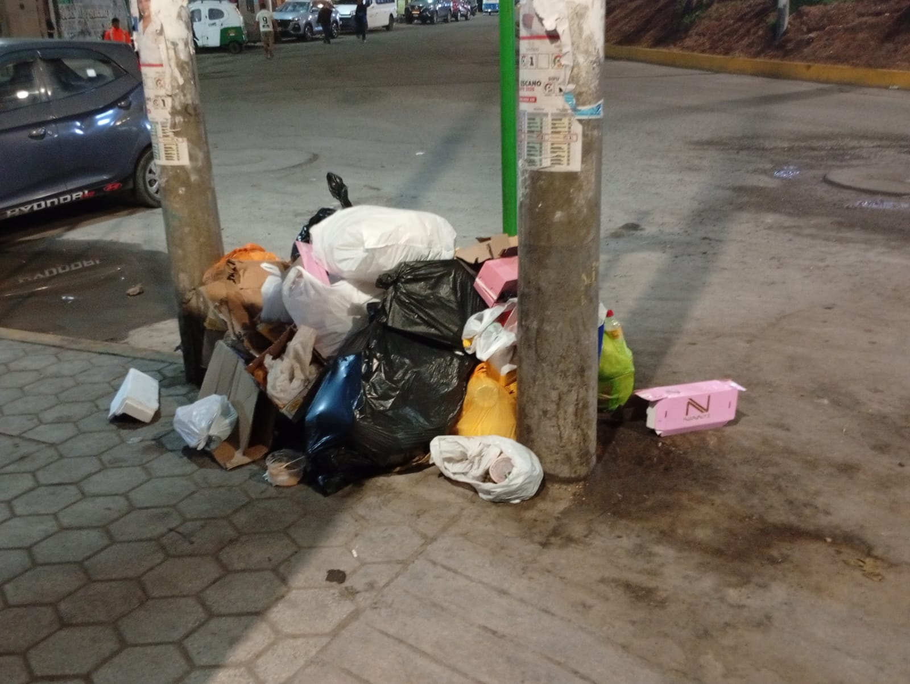
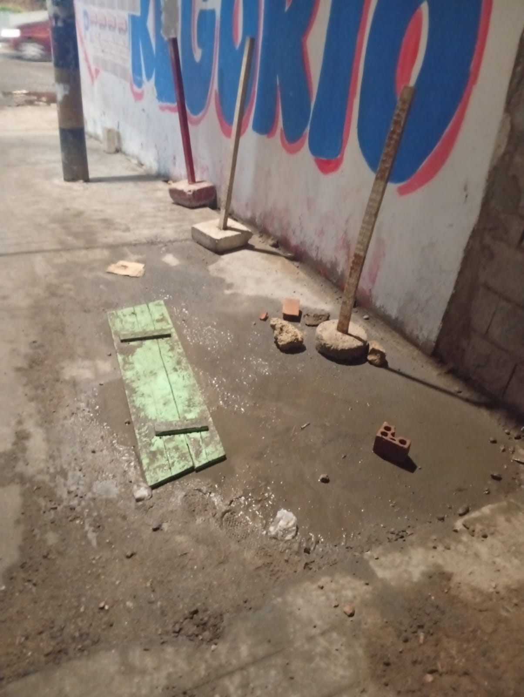
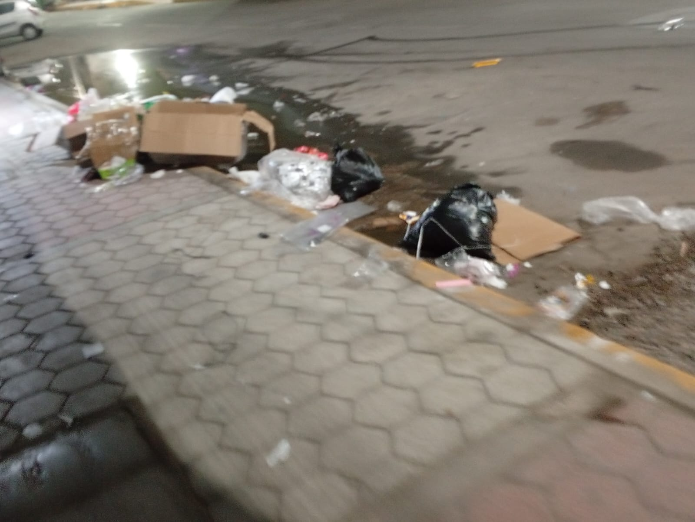
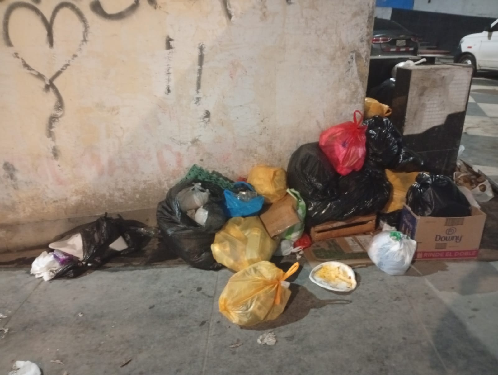
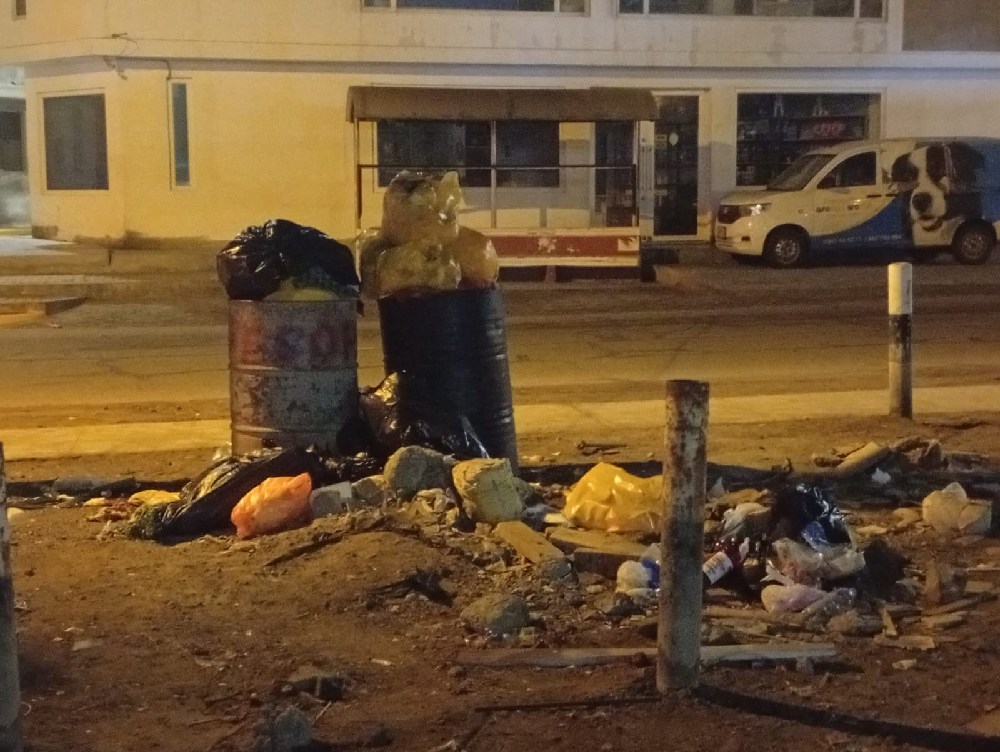

Los problemas de salubridad son situaciones o condiciones que afectan la higiene, limpieza y salud de las personas en una comunidad.
Estos problemas pueden originarse por acumulación de basura, agua contaminada,falta de limpieza en los lugares públicos o mala manipulación de alimentos, provocando enfermedades y afectando la calidad de vida de la población
En la localidad de Marcona, los problemas de salubridad pueden relacionarse con la acumulación de basura en algunas calles y mercados, la contaminación causada por actividades industriales y la falta de limpieza en ciertos espacios públicos.
Estas situaciones pueden generar malos olores, presencia de insectos y riesgos para la salud de los habitantes, afectando la calidad de vida de la comunidad.
Acumulación de basura en calles y espacios públicos :
La presencia de residuos en algunas zonas genera malos olores y contaminación.
Falta de agua potable constante :
Muchas familias reciben agua de manera limitada o intermitente, afectando la higiene y salud.
Problemas de alcantarillado y desagüe :
Existen obras paralizadas y sistemas deteriorados de agua y alcantarillado que afectan a la población.
Contaminación ambiental y polvo excesivo :
El polvo, humo y contaminación del ambiente afectan la calidad del aire y la salud de las personas.
Aguas residuales y malos olores :
Las pozas de oxidación abandonadas y aguas servidas producen contaminación del aire y olores desagradables.
Presencia de insectos y animales callejeros :
Moscas, perros callejeros y roedores aparecen en zonas con basura o desperdicios.
Falta de limpieza en algunos puestos de venta :
Algunos lugares de comida o comercio informal no mantienen una higiene adecuada.
Deficiencia en servicios básicos :
Parte de la población considera que existen carencias en agua, saneamiento y limpieza pública.
Obras de saneamiento paralizadas :
Algunas infraestructuras importantes para mejorar la salubridad quedaron inconclusas y deterioradas.
-Acumulación de basura en calles y mercados:
Cuando los residuos no se recogen a tiempo, se generan malos olores, insectos y contaminación.
-Falta de educación ambiental:
Algunas personas botan desperdicios en cualquier lugar o no separan los residuos correctamente.
-Deficiente servicio de limpieza pública:
Si hay pocos camiones recolectores o limpieza insuficiente, la suciedad se acumula rápidamente.
-Presencia de animales callejeros:
Perros y otros animales pueden romper bolsas de basura y esparcir desechos.
-Polvo y contaminación ambiental:
En zonas costeras y mineras como Marcona, el viento levanta mucho polvo, y algunas actividades industriales pueden aumentar la contaminación del aire.
-Desagües o alcantarillas en mal estado:
Cuando hay fugas o aguas estancadas, aparecen bacterias, malos olores y mosquitos.
-Comercio informal sin control sanitario:
Algunos puestos de venta de comida no cuentan con higiene adecuada ni manejo correcto de alimentos.
-Falta de áreas verdes y mantenimiento urbano:
Los espacios abandonados suelen convertirse en puntos de acumulación de basura.
Aumento de enfermedades:
La suciedad y contaminación pueden causar gripe, alergias, infecciones estomacales, diarrea y problemas respiratorios.
Malos olores y contaminación del ambiente:
La basura acumulada y las aguas estancadas generan un ambiente desagradable para los vecinos.
Presencia de insectos y roedores:
Moscas, cucarachas y ratas aparecen donde hay desperdicios, y pueden transmitir enfermedades.
Contaminación del aire y polvo excesivo:
El polvo y humo afectan especialmente a niños, adultos mayores y personas con asma.
Daño a la imagen de la ciudad:
Las calles sucias hacen que el lugar se vea descuidado y menos atractivo para visitantes.
Problemas en la salud mental y bienestar :
Vivir en lugares con suciedad constante puede generar estrés, incomodidad y preocupación.
Contaminación del mar y suelo:
Los residuos pueden terminar en playas o zonas cercanas, afectando animales y ecosistemas.
Riesgo para los alimentos:
En puestos de comida sin higiene, los alimentos pueden contaminarse y causar intoxicaciones.
Menor calidad de vida:
La comunidad vive en un ambiente menos seguro, menos limpio y menos saludable.
Mejorar la limpieza pública :
Aumentar la recolección de basura y colocar más tachos en calles y lugares públicos.
Promover la educación ambiental :
Realizar campañas para enseñar a la población a no botar basura y cuidar el ambiente.
Reparar y mantener el alcantarillado :
Dar mantenimiento a los desagües y evitar aguas estancadas o fugas.
Mejorar el acceso al agua potable :
Garantizar que las familias tengan agua limpia y constante.
Controlar la contaminación y el polvo :
Regar calles sin pavimentar y supervisar actividades que generen contaminación.
Control de animales callejeros :
Realizar campañas de vacunación, adopción y cuidado responsable de mascotas.
Supervisar puestos de venta de comida :
Exigir higiene adecuada y controles sanitarios en mercados y comercios.
Fomentar el reciclaje :
Separar residuos y reutilizar materiales para reducir la acumulación de basura.
Participación de la comunidad :
Organizar jornadas de limpieza y motivar a los vecinos a cuidar su ciudad.
Apoyo de las autoridades :
Impulsar proyectos de saneamiento y mejorar los servicios básicos para toda la población.





todas estas zonas ubicadas en lugares publicos muy transcurridos.
Prensentan grades cantidades de basura como plasticos, bolsas, vidrios, cajas, maderas. cartones, etc.
Ademas de dar mala imagen a la localidad presentan un riesgo para la salud publica puesto que se los virus y bacterias de estas zonas se
transmiten mediante el aire y los animales callejeros que buscan comida en estas zonas y terminan rompiendo y esparciendo estas bolsas con residuos organicos e inorganicos.
Los ciudadanos de la localidad pueden tomar conciencia de la situacion y el entorno en el que se encuentran. Pueden concientizar a sus hijos y promover y realizar juntas donde se dediquen a limpiar en union las zonas con mayor acumulacion de basura e implementar tachos y carteles para evitar la acumulacion excesiva de basura en zonas publicas, asi como en consecuencia esto mejoraria su calidad de vida y la salud en general.